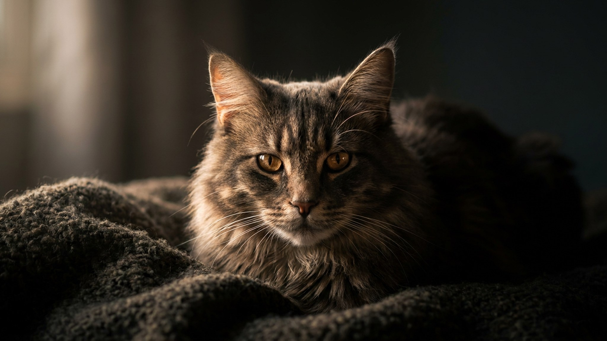

Пять утра. Вы чуть пошевелили ногой под одеялом — и кошка уже вцепилась в щиколотку. Это не агрессия и не злой умысел: движущийся бугорок под тканью запускает охотничий рефлекс так же автоматически, как мышь в поле. Проблема в том, что случайное поощрение этого поведения закрепляет его навсегда. Разбираем, почему это происходит и как перенаправить охоту туда, где она никому не мешает.
🐾 Хотите понять, что кошка говорит вам?
Опишите ситуацию или пришлите видео в AnimaLife — AI разберёт поведение вашего питомца и подскажет, что делать. Бесплатно, ответ за минуту.
Разобрать поведение → Разобрать в MAX →
У вас iPhone? AnimaLife есть в App Store
За атакой на ноги стоят три механизма, которые часто работают одновременно.
Это ключевой момент, который упускают большинство владельцев. Любая реакция на атаку закрепляет поведение: вскрик, смех, отдёргивание ноги, попытка прогнать кошку. Для неё всё это — ответ «добычи», то есть сигнал, что всё получилось.
Кошка учится на последствиях. Атака без результата постепенно теряет смысл — но только если вы последовательны каждый раз.
Кошки в природе охотятся, едят добычу, умываются и засыпают. Эту последовательность легко воспроизвести дома — и она существенно снижает ночную активность.
В большинстве случаев атаки на ноги — нормальное охотничье поведение, которое корректируется распорядком и правильной реакцией. Но есть ситуации, когда лучше показать кошку специалисту: если поведение появилось резко у взрослого животного, если атаки сопровождаются другими признаками возбуждения или тревоги, если кошка не успокаивается даже после активной игры. В таких случаях ветеринар или зоопсихолог поможет разобраться в причине — это их работа.
🐾 У вашей кошки так же?
Расскажите в AnimaLife, как ведёт себя ваш питомец, — приложение объяснит причину и даст пошаговый план. Бесплатно, без записи к специалисту.
Разобрать свой случай → Разобрать в MAX →
У вас iPhone? AnimaLife есть в App Store
🐾 Понравился разбор?
Подпишитесь на канал — каждый день разбираем по одному тревожному симптому у кошек и собак: что в пределах нормы, а когда пора к врачу. Подпишитесь, чтобы не пропустить разбор, который может спасти здоровье вашего питомца.
Материал носит информационный характер и не заменяет очную консультацию ветеринара.